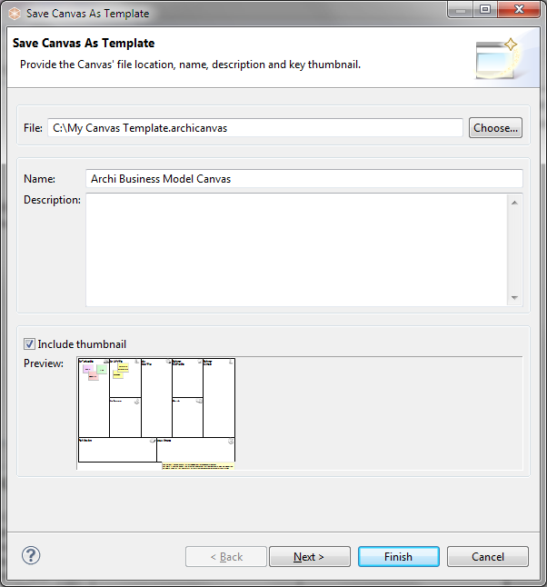
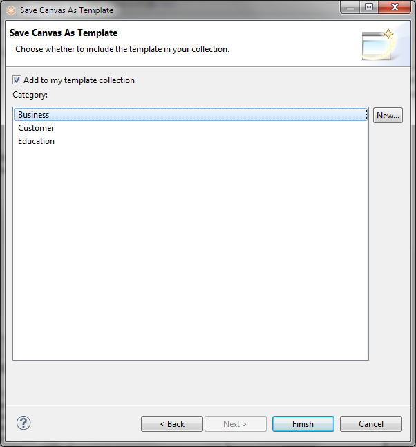

Saving a Canvas as a Template
To Save an existing Canvas as a template follow these steps:
- Create a new Canvas or open an existing model containing a Canvas.
- Select the Canvas in the Model Tree, right-click on it and choose "Save Canvas as Template...". A wizard will open:

- In the wizard, provide a file name for the location for the template file, a name for the template (this is different than the name of the model) and a description.
- Select whether you want to include a thumbnail image of the Canvas in the template.
- Click "Next" to move on to the next page of the wizard:

- Choose whether you wish to add the template to your collection. Your collection of templates is a list sorted into categories that will be displayed in the "New Canvas from Template" wizard. If there are no categories available to choose from you can create a new category by clicking on the "New..." button in the wizard.
- Press "Finish".
The template will be saved on your file system with an "*.archicanvas" extension. You can share this template with other Archi users if you like.